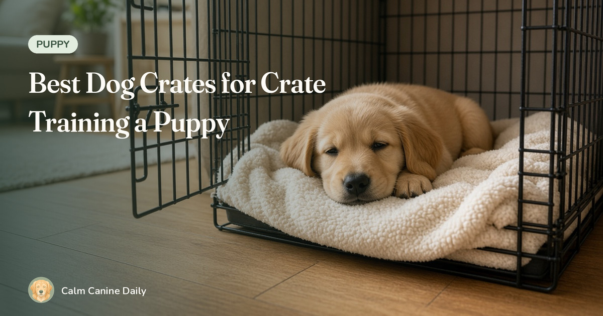

Best Dog Crates for Crate Training a Puppy

Affiliate disclosure: Calm Canine Daily is reader-supported. Some links in this article are affiliate links, including our link to Brain Training for Dogs and, when our Amazon Associates account is active, product links marked with an [AMAZON:…] placeholder. If you buy through an affiliate link, we may earn a commission at no extra cost to you. We don’t pretend to be the product makers, and no trainer or brand has endorsed this article just because we may recommend their work. This is general information, not a veterinary diagnosis or a promise of a specific result.
The best crate for crate training a puppy is a bedroom you teach, not a timeout room you impose. Used well, it can make house training easier, give your puppy a quiet place to nap, and keep teeth away from cords. Used as a surprise, a punishment, or a place they are left too long, it becomes a box they panic in.
For a puppy, the hardware that usually helps is a divider, an easy-to-clean floor, a convenient door, and a latch a clever nose cannot bump open. We checked official manufacturer pages on November 20, 2026. MidWest’s iCrate page confirmed features and sizes but did not display a price until a size was selected, so we are not inventing a dollar amount for it.
Get the free 7-Day Calm Dog Checklist
New puppy, restless teenager, or adult still learning house manners? The free checklist gives you one short, kind habit a day.
TL;DR
Buy the crate for the dog your puppy will grow into, then make the living space smaller with a divider. A puppy given a mansion of leftover space will often sleep at one end and pee at the other, which slows house training. The puppy should be able to stand without slouching, turn around, and lie down comfortably in the section you have opened — and not much more than that at the beginning.
A MidWest iCrate, or a similar folding wire crate with a divider and a removable pan, is the practical starting point for most households. A Petmate Vari Kennel is the classic plastic travel option, but the page we checked does not describe a built-in divider. Diggs Revol 2.0 is the premium home crate with a side door, wheels, and a divider included. Impact’s collapsible aluminum crate is the heavy-duty option; the puppy divider is sold separately, and the company says this model is not for determined escape artists or severe anxiety.
Go slowly. Never use the crate as punishment. If your puppy cries, first rule out a potty need, pain, or panic.
Quick comparison
| Crate | Official price (Nov. 20, 2026) | Why it helps with puppies | Watch-outs | Best for |
|---|---|---|---|---|
| MidWest iCrate | Not displayed on the official page without a size selected | Seven sizes (18–48"), single or double door, divider included, removable leak-proof pan, folds flat | Wire is not escape-proof; full visibility can overstimulate some puppies | Most households that want a straightforward, adjustable wire crate |
| Petmate All Purpose Vari Kennel | From $39.99 on the official product page | Durable plastic, easy to clean, interior moat, useful for car and many airline trips (confirm with your airline) | Sizes 19–40"; no divider described on the product page we checked | Travel and a more enclosed den, especially once you know the adult size |
| Diggs Revol 2.0 | $419.30 shown, marked down from $599; confirm your size | Divider included, front door plus a garage-style side door, diamond mesh, wheels, folds flat | Premium price; some sizes were on backorder when we checked | A safer-feeling, nicer-looking home crate you will actually leave out |
| Impact Collapsible Dog Crate | $592.80, marked down 22% from $760; confirm size and finish | Tough aluminum, folds flat, lifetime manufacturer warranty on defects (not on dog damage unless you add a plan) | Puppy divider sold separately; not recommended by the company for determined escape artists or severe anxiety | Travel and owners who need a stronger crate than wire or plastic |
[AMAZON:MidWest iCrate Double Door Folding Dog Crate] · [AMAZON:Petmate Vari Kennel] · [AMAZON:Diggs Revol Dog Crate] · [AMAZON:Impact Collapsible Dog Crate]
How big should a puppy crate be?
With your puppy standing on a level floor, measure from the tip of the nose to the base of the tail (not the tail itself) and from the floor to the top of the head — or to the tip of an upright ear if the ears stand naturally. Brands differ on how much extra room to add. Petmate says the kennel should be about 3–4 inches taller and longer than the dog. Diggs suggests adding about 2 inches to height and 2–4 inches to length for the minimum interior, and sizing up if your dog likes to change positions. Use the chart for the crate you are actually buying.
For a puppy, the winning move is usually: choose the adult size, then use a divider. MidWest and Diggs include a divider with the crates in this guide. Impact sells a puppy divider separately and notes that it is not compatible with the company’s Pro Series. Petmate’s Vari Kennel page we checked does not describe a divider, so a large plastic kennel for a small puppy is a weaker one-crate-for-life pick.
The crates
1. MidWest iCrate
[AMAZON:MidWest iCrate Double Door Folding Dog Crate]
The official product page lists seven sizes, from 18-inch to 48-inch, in single-door and double-door styles. It includes a divider panel, a removable leak-proof plastic pan, rubber feet, and a slide-bolt latch with a locking tip and MidWest’s Paw Block. It folds flat, and MidWest describes rounded side clips meant to reduce sharp edges. Double doors let you place the crate in a corner and still invite the puppy in from the open side.
A basic wire crate is not a fortress. A panic-thrashing dog or a heavy chewer may need a different design — and a different training plan. A breathable cover, used only once the puppy is comfortable, can help; never block airflow. Compare current retailer pricing, because the official page did not show a price without a size selected.
2. Petmate All Purpose Vari Kennel
[AMAZON:Petmate Vari Kennel]
Petmate’s All Purpose Vari Kennel is listed from $39.99. It is made in the USA with 90% pre-consumer recycled plastic, assembles without tools, and is described as suitable for housebreaking, kennel training, and travel. Features include a squeeze-latch door, ventilation on the back and side walls, an interior moat, and holes you can zip-tie for travel. Sizes run 19 to 40 inches, with official weight ranges from under 10 pounds up to 70–90 pounds in the 40-inch size. Petmate says it meets most air travel requirements if assembled with the included wing nuts and bolts; confirm rules with your airline before you fly.
Some puppies settle faster in that more enclosed space; others would rather see you. If you already know the adult size, a Vari Kennel can be a home-and-travel box. If you have an eight-week-old Labrador who will need a 36-inch kennel, start with a divided wire or premium crate and add the Vari Kennel when travel is actually on the calendar.
3. Diggs Revol 2.0
[AMAZON:Diggs Revol Dog Crate]
The current model is Revol 2.0, a redesign the company says looks different from the Revol sold before November 2026; earlier awards and reviews refer to the original. The official page showed a sale price of $419.30, marked down from $599. Confirm the price for your size. When we checked, the company also noted a backorder, with shipping expected to start January 15 (the page did not print the year; given our check date of November 20, 2026, that is likely January 15, 2027).
What you are paying for, according to Diggs: an aluminum frame with diamond-shaped steel mesh meant to reduce paw and jaw injuries, rounded edges, a front door plus a garage-style side door, a dual-action front lock the company says cannot be opened from the inside, wheels, a fold-flat design, a removable tray, and a puppy divider included. Sizes are Small, Medium, and Large. The side door lets a puppy step in without feeling swallowed by a dark cave. Read the current return policy before you buy; unused returns were limited, and declining an optional add-on can mean a restocking fee.
4. Impact Collapsible Dog Crate
[AMAZON:Impact Collapsible Dog Crate]
Impact’s official page listed the collapsible aluminum crate at $592.80, 22% off $760. Confirm your size, door style, and color; lead times vary. It folds flat, sets up quickly, and includes a lifetime manufacturer warranty for defects in hardware and craftsmanship. That warranty, as written, does not cover dog damage unless you buy an optional protection plan.
This is not automatically the “anxious puppy” crate. Impact is blunt: the collapsible model is not 100% escape-proof, is meant for everyday containment and portability rather than determined escape artists, and is not the model they recommend if a dog has a history of breaking out or shows severe anxiety or destructive behavior. A stronger box does not treat panic. If your puppy is injuring themselves trying to get out, you need professional behavior help, not only a different latch. If you choose this crate for a growing puppy, budget for the compatible puppy divider (sold separately, and not for the Pro Series).
A slow introduction that actually sticks
If you also need a short settle on a mat — not only time in the crate — see Why a Tired Dog Still Won’t Settle.
Day one is not “put the puppy in and hope.” Leave the door open, drop treats just inside, and feed meals in the crate. When your puppy walks in on their own, close the door for a few seconds, then open it before they fuss. Build duration slowly, and only later step out of the room.
Nighttime is easier if the crate is near you at first. A young puppy will need potty breaks overnight. Take them out quietly, then back to bed. If crying starts, ask the unglamorous questions first: Do they need to go out? Are they in pain? Is a nail or collar caught? A brief protest as they settle is different from escalating panic. Panic means you went too far, too fast. Open the door, reset, and shorten the next session.
There is no single official clock that fits every dog. Very young puppies cannot “hold it” for a workday, and a crate is not a substitute for a midday sitter or a safe pen. Accidents are information (too much space, too much time, or a medical issue), not defiance. Take collars and dangling tags off before you close the door, so nothing can catch on a latch.
Avoid using the crate as “jail” after a mess, skipping the divider “so they have room to play,” or assuming a more expensive crate will fix panic. Comfort helps. Panic still needs a training plan, and sometimes a medical one.
A crate is a place. Training is how it becomes a resting place.
The right crate and a careful introduction will get you far. A crate will not, by itself, teach bite inhibition, potty manners, or how to settle when the house is quiet. If you want a force-free, at-home program of short mental games, with a dedicated puppy section that includes crate training, potty training, and socialization, take a look at Brain Training for Dogs, created by CPDT-KA trainer Adrienne Farricelli.
FAQ
Should I cover the crate?
Once your puppy is comfortable, a breathable cover can make a wire crate feel more den-like. Watch for overheating, and never block ventilation. If covering increases fussing, take it off.
What bedding is safe for a puppy?
Start with something easy to wash and hard to shred. If your puppy eats bedding, go simpler and ask your vet or trainer for guidance.
Is it okay for my puppy to sleep in the crate all night?
Many puppies can learn to sleep in a crate overnight, with potty breaks as needed. That is different from being crated all day and all night.
My puppy has accidents in the crate. What now?
Rule out a medical problem with your vet, then look at timing and space. Make the crate smaller with a divider, go out after meals, play, and naps, and do not punish accidents.
When should I get help?
If your puppy panics (heavy drooling, desperate escape attempts, self-injury), if you are worried about a bite, or if you feel in over your head, talk with your veterinarian and a certified trainer.
Get the free 7-Day Calm Dog Checklist
For a free, gentle week of short habits that support settling and everyday manners — a useful companion to crate training — grab the checklist.
Related guides
- Why a Tired Dog Still Won’t Settle
- Best calming dog beds for anxious dogs
- How to Stop Your Dog From Jumping on Guests
- Brain Training for Dogs review
- Puppy training guides
- Get the free 7-Day Calm Dog Checklist
Sources and product pages checked
Prices, sizing, and feature details were checked on the official pages below on November 20, 2026. They can change.
- MidWest iCrate: https://www.midwesthomes4pets.com/product/dogs/crates-carriers-kennels/icrate-dog-crate/
- Petmate All Purpose Vari Kennel: https://www.petmate.com/products/petmate-vari-kennel
- Petmate sizing and crate-training guidance: https://www.petmate.com/blogs/petmate-academy/portable-dog-kennels-best-options-for-home-travel
- Diggs Revol 2.0: https://www.diggs.pet/products/revol-collapsible-dog-crate
- Impact Collapsible Dog Crate: https://www.impactdogcrates.com/products/collapsible-dog-crate
- Impact Puppy Divider (sold separately): https://www.impactdogcrates.com/products/puppy-divider
- 7-Day Calm Dog Checklist: https://calmcaninedaily.systeme.io/free-checklist?utm_source=blog&utm_medium=cta&utm_campaign=checklist&utm_content=best-dog-crates-for-crate-training-a-puppy-end